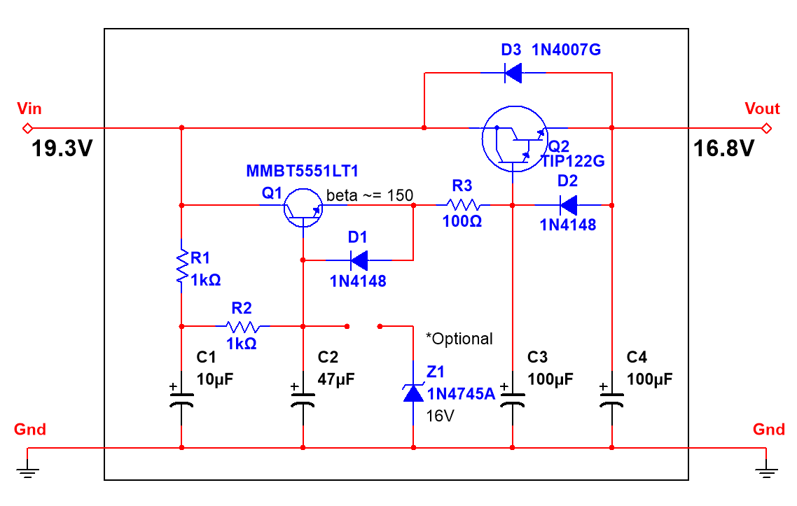
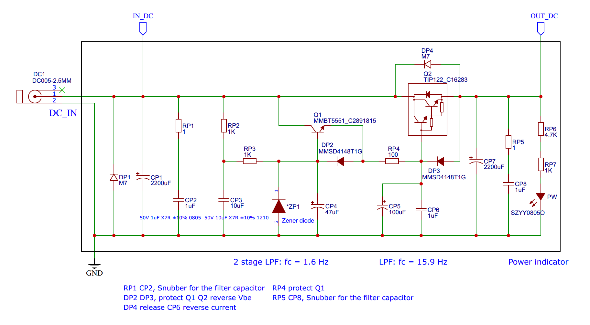

Hight Current Ripple Filter
Ripple filter for power amplifiers. © 2023 May, Denzuko
Introduction
I used to use a small capacitor multiplier for my headphone amp and preamp,
it worked so great that I decide to design a high current version by using darlington transistors.
And it worked aslo good on TDA7297 15+15W dual bridge amplifier.
Maybe it can also work with LM3886.
Features
- can output high current
- simple
- Can work under high pressure (depending on components)
- can work on negative voltage
- can reduce power line ripple voltage and noise
Pictures


"Good design is as little design as possible."
~ Dieter Rams